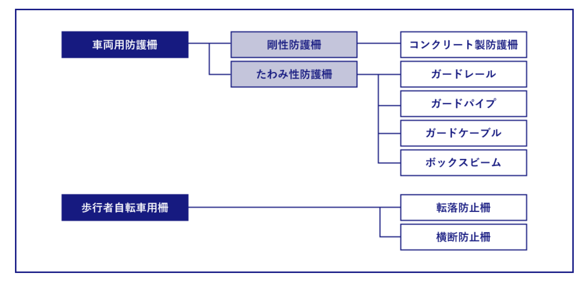
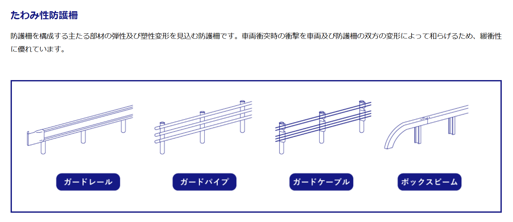

高欄と防護柵
種類と特徴
橋梁用車両防護柵という意味がある「高欄」。
高さは、道路の路面より1.1mと決まっている。
自転車に乗った人や歩行者が橋の下に落ちないよう設置されたもので、
たいていの橋の左右には設置されている柵を指す。
車がぶつかっても簡単にはネジが外れて柵が外れないよう頑丈な造りとなっており、
適度に湾曲して車両が大きく破損しないようにしている。
また、ぶつかった車両が元の位置へと戻れるよう進行方向に向きを変える
といった効果も期待できる柵を指す。
中心となる横梁は路面より1.0m、下段横梁は地覆面から0.6m以下になるのが「防護柵」。
自転車やバイク、歩行者、車が通る橋の左右に取り付けられている柵を指す。
橋を踏み外した人や乗り物が縁に落ちるのを防ぎ、
お年寄りや子供が安心して歩行できるように設けられた手すりのこと。
この橋梁の「防護柵」には、
・車両がぶつかったとき横転しない
・衝突した後に離脱する角度が衝突角度よりも6割下になる
といった基準が設けられている。
防護柵の種類
たわみ性防護柵
今回メインに扱っていくのはたわみ性防護柵である。
ガードレールは、たわみ性防護柵に分類される。

参考文献
防護柵の設置基準
防護柵の種類